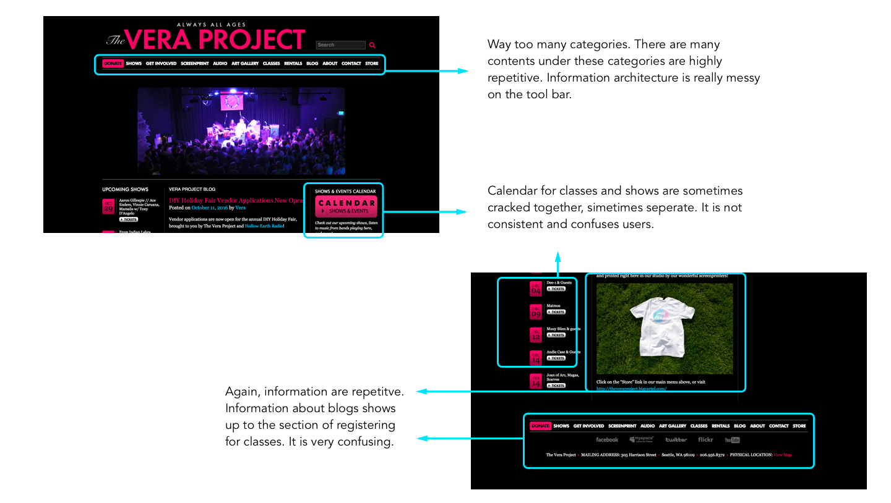
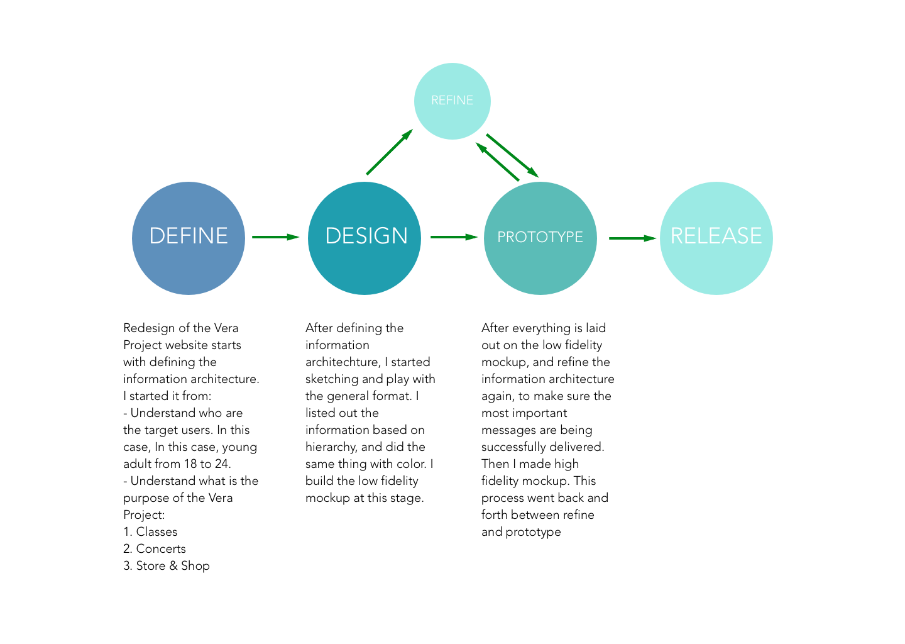
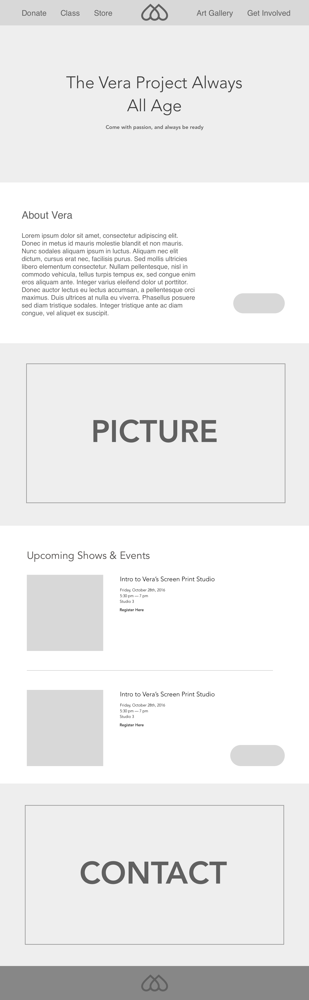
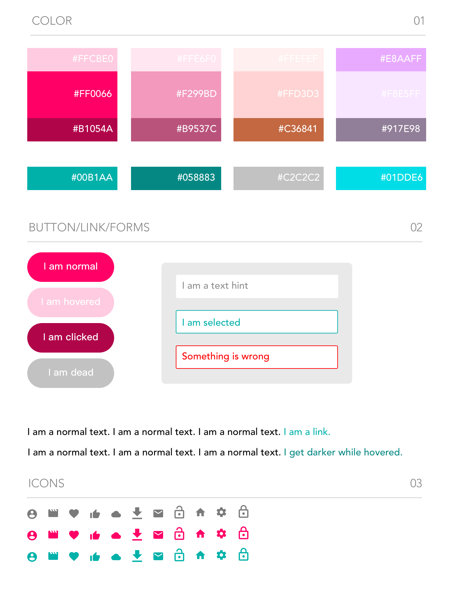

Project Overview
This is my Visual Communication Final Project, Spring 2016, where I redesigned the Vera Project website by reorganizing the information architecture and complete the user interface redesign.
VERA is an all-ages volunteer-fueled music and arts venue. By engaging participants at all levels of music production and community organizing, Vera fulfills its mission to foster a participatory creative culture through popular music concerts, arts programs, experiential learning and volunteer opportunities for all ages, especially young people.
Current Problems
As a student, I was handed out several problematic designed user interfaces and asked to do a redesign. I chose the Vera Project, because it vividly expresses a positive energy that celebrates youth and passion. I read through the who website, and then I understood why my instructor believed the design of this website is problematic.
Before anything, I ran a heuristic evaluation on the landing website of the Vera Project. I then noticed the following design problems of it:
- The bar has too many categories of information jammed together.
- Registration for classes and shows are confusing. They appear in multiple different places through the navigation of the website, and yet there is not distinct explanation saying which one is registering for shows or concert and which one is registering for classes.
- The blog titles and abstracts of the blogs appear on the landing page with all other navigation. It is highly confusing and disrupt the hierarchy of the website.
- The information architecture in all is very disorganized.
Here are some picture examples.
 Current design problems of the Vera Project websiteDesign Process
After understanding the current pain points of the design, I started to reorganize the information architecture by creating a new hierarchy, regrouping the same category of information and news and separating different categories.
I planned out the design process to be four different parts: define, design, prototype, finish deliverable.
 Design ProcessThe main design insight is basically breaking all the information down, recreating the hierarchy, and put the design elements back together.
Wireframes
Here is the low fidelity mockup of user interface design of the Vera Project.
 Low fidelity mockup of the Vera Project landing pageUI Style Cheatsheet
Here is the color choices and branding of the Vera Project redesign.
 UI color cheatsheetFinal Deliverables
Here is the final deliverable of user interface design of the Vera Project.
 High fidelity mockup of the Vera Project landing page
High fidelity mockup of the Vera Project landing page